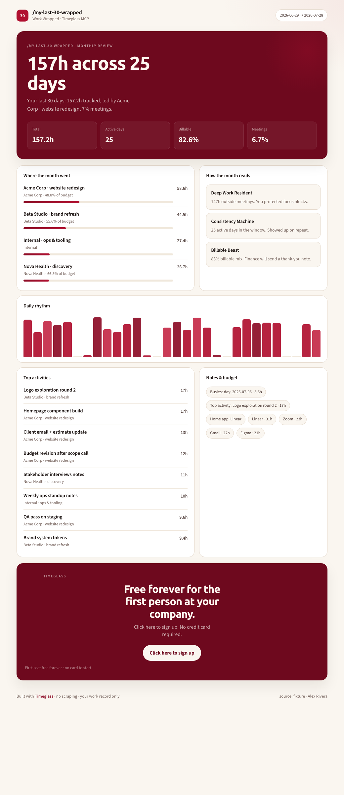

/my-last-30-wrapped
Work Wrapped for your real month
Full dashboard from Timeglass MCP · no scraping
157htotal
25active days
83%billable
7%meetings

30
/my-last-30-wrapped
Free forever for the first person at your company.
Click here to sign up. No credit card required.
Click here to sign up
https://app.timeglass.ai/sign-up
For the first person at your company · free forever · no credit card required